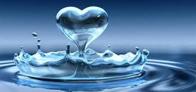
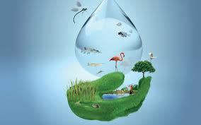
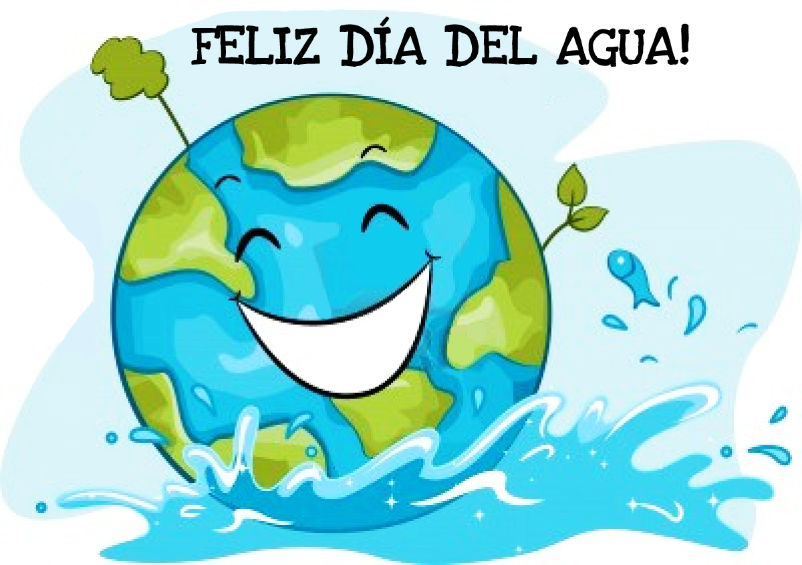
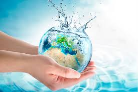
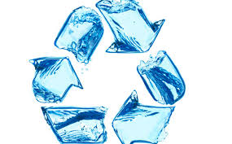
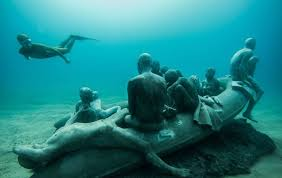
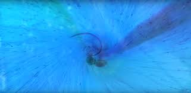

Formulario
Formulario sobre el agua
El AGUA
El agua (H2O) es una molécula formada por dos elementos, hidrógeno y oxígeno. Contiene dos átomos de hidrógeno y uno de oxígeno. La molécula del agua es dipolar: tiene un polo positivo por parte del hidrógeno y uno negativo debido al oxígeno. Los dipolos se forman debido al enlace covalente que une a los dos elementos; esto hace que se forme una carga parcial negativa en la parte del oxígeno de la molécula de agua y una carga parcial positiva en la parte del hidrógeno. Puesto que los átomos de hidrógeno y oxígeno en la molécula contienen cargas opuestas, moléculas de agua vecinas se atraen entre sí. La atracción electrostática entre el hidrógeno y el oxígeno en las moléculas adyacentes se llama enlace de hidrógeno. Esta estructura permite que muchas moléculas iguales se unan con gran facilidad, formando enormes cadenas que constituyen el líquido que da la vida a nuestro planeta.
Estructura y propiedades del agua
La molécula de agua está formada por dos átomos de H unidos a un átomo de O por medio de dos enlaces covalentes. El ángulo entre los enlaces H-O-H es de 104'5º. El oxígeno es más electronegativo que el hidrógeno y atrae con más fuerza a los electrones de cada enlace.
El resultado es que la molécula de agua aunque tiene una carga total neutra (igual número de protones que de electrones ), presenta una distribución asimétrica de sus electrones, lo que la convierte en una molécula polar, alrededor del oxígeno se concentra una densidad de carga negativa , mientras que los núcleos de hidrógeno quedan parcialmente desprovistos de sus electrones y manifiestan, por tanto, una densidad de carga positiva.
FORMULARIO
1.-Escribe tu nombre:2.-Escribe tu Email:
3.-¿Cuál es tu sexo:
Hombre
Mujer
4.-¿Qué piensas de la contaminación en el agua?
5.-¿Qué harias para dejar de contaminar el agua?
6.¿Qué importancia le das al agua?
7.-¿Cuáles son los tipos de aguas que conoces?
8.-¿Qué minerales se encuentran en el agua?
9.-¿Se puede con el agua producir cálculos renales?
10.-¿Para que usas el agua?
11.-¿Tu cres que el agua del mar es importante?
12.-¿Para ti el agua marino es importante?
13.-¿Que crees que pasaría si no hubiera agua marina?
14.-¿Que estructuras de aguas conoces?
15.-¿Qué estados del agua conoces?
16.-¿Qué crees que pasaría si no hubiera agua en el mundo?
17.-¿Qué más conceptos le puedes dar al agua?
18.-¿Que entendiste de esta página?
19.-Escribe tus resultados y conclusiones
20.-¿Qué opinas de esta página?
GRACIAS POR TU COMPRENSION
- 
- 